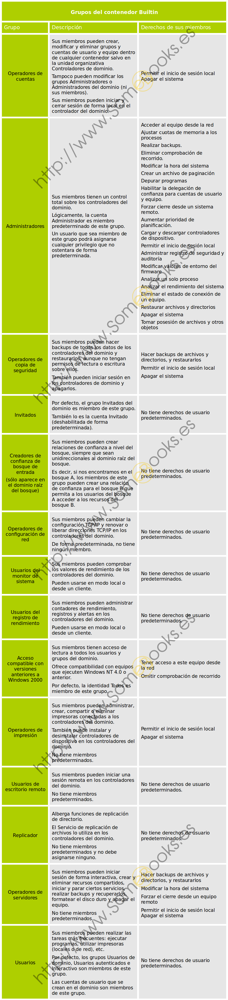

Conceptos básicos
Uno de los elementos fundamentales en la administración de una red, es el control de los usuarios, grupos y equipos. Por ello, debemos aprender cómo crearlos, modificarlos, organizarlos y, si llega el caso, eliminarlos. Además, deberemos asignar privilegios para cada uno de ellos, de modo que podamos establecer en qué medida y bajo qué condiciones podrán beneficiarse de los recursos de la red. Este objetivo lo cubriremos, en parte durante el presente capítulo, pero seguiremos completándolo en el siguiente.
Cuenta de usuario
Como ya comentábamos en el capítulo anterior, una de las primeras ideas que deben quedar claras cuando hablamos de cuentas de usuario es que no siempre representan a personas concretas, sino que también pueden ser utilizadas como mecanismos de acceso para determinados servicios o aplicaciones de la máquina local o, incluso, de un equipo remoto.
En definitiva, una cuenta de usuario es un objeto que posibilita el acceso a los recursos del dominio de dos modos diferentes:
- Permite autenticar la identidad de un usuario, porque sólo podrán iniciar una sesión aquellos usuarios que dispongan de una cuenta en el sistema asociada a una determinada contraseña.
- Permite autorizar, o denegar, el acceso a los recursos del dominio, porque, una vez que el usuario haya iniciado su sesión sólo tendrá acceso a los recursos para los que haya recibido los permisos correspondientes.
Cada cuenta de usuario dispone de un identificador de seguridad (SID, Security IDentifier) que es único en el dominio.
Cuentas Integradas
Cuando se crea el dominio, se crean también dos nuevas cuentas: Administrador e Invitado. Posteriormente, cuando es necesario, se crea también la cuenta Asistente de ayuda. Estas son las denominadas cuentas integradas y disponen de una serie de derechos y permisos predefinidos:
- Administrador: Tiene control total sobre el dominio y no se podrá eliminar ni retirar del grupo Administradores (aunque sí podemos cambiarle el nombre o deshabilitarla).
- Invitado: Está deshabilitada de forma predeterminada y, aunque no se recomienda, puede habilitarse, por ejemplo, para permitir el acceso a los usuarios que aún no tienen cuenta en el sistema o que la tienen deshabilitada. De forma predeterminada no requiere contraseña, aunque esta característica, como cualquier otra, puede ser modificada por el administrador.
- Asistente de ayuda: se utiliza para iniciar sesiones de Asistencia remota y tiene acceso limitado al equipo. Se crea automáticamente cuando se solicita una sesión de asistencia remota y se elimina cuando dejan de existir solicitudes de asistencia pendientes de satisfacer.
Por último, debemos tener en cuenta que, aunque la cuenta Administrador esté deshabilitada, podrá seguir usándose para acceder al controlador de dominio en modo seguro.
Cuenta de equipo
Como ocurría con las cuentas de usuario, una cuenta de equipo sirve para autenticar a los diferentes equipos que se conectan al dominio, permitiendo o denegando su acceso a los diferentes recursos del dominio.
Del mismo modo que con las cuentas de usuario, las cuentas de equipo deben ser únicas en el dominio. Aunque una cuenta de equipo se puede crear de forma manual (como veremos más adelante), también se puede crear en el momento en el que el equipo se une al dominio.
Cuenta de grupo
Un grupo es un conjunto de objetos del dominio que pueden administrarse como un todo. Puede estar formado por cuentas de usuario, cuentas de equipo, contactos y otros grupos.
Podemos utilizar los grupos para facilitar algunas tareas, como:
El Directorio Activo proporciona un conjunto de grupos predefinidos que pueden utilizarse tanto para facilitar el control de acceso a los recursos como para delegar determinados roles administrativos. Por ejemplo, el grupo Operadores de copia de seguridad permite a sus miembros realizar copias de seguridad de todos los controladores de dominio, en el dominio al que pertenecen.
Ámbito de los grupos
El ámbito de un grupo establece su alcance, es decir, en qué partes de la red puede utilizarse, y el tipo de cuentas que pueden formar parte de él. En ese sentido, pueden pertenecer a una de las siguientes categorías:
-
Ámbito local: Entre sus miembros pueden encontrarse uno o varios de los siguientes tipos de objetos:
- Cuentas de usuario o equipo.
- Otros grupos de ámbito local.
- Grupos de ámbito global.
- Grupos de ámbito universal.
- Ámbito global: Sólo pueden incluir otros grupos y cuentas que pertenezcan al dominio en el que esté definido el propio grupo. Los miembros de este tipo de grupos pueden tener permisos sobre los recursos de cualquier dominio dentro del bosque. Sin embargo, estos grupos no se replican fuera de su propio dominio, de modo que, la asignación de derechos y permisos que alberguen, no serán válidas en otros dominios del bosque.
- Ámbito universal: Entre sus miembros pueden encontrarse cuentas o grupos de cualquier dominio del bosque, a los que se les pueden asignar permisos sobre los recursos de cualquier dominio del bosque.
Tipos de grupos
Existen dos tipos de grupos en Active Directory:
- Grupos de distribución: Se utilizan en combinación con programas como Microsoft Exchange Server, para crear listas de distribución de correo electrónico. Estos grupos no disponen de características de seguridad, por lo que no pueden aparecer en las listas de control de acceso discrecional (DACL, Discretionary Access Control Lists).
-
Grupos de seguridad: Permiten asignar permisos a las cuentas de usuario, de equipo y grupos sobre los recursos compartidos. Con los grupos de seguridad podemos:
- Asignar derechos de usuario a los grupos de seguridad del Directorio Activo. De esta forma, podemos establecer qué acciones pueden llevar a cabo sus miembros dentro del dominio (o del bosque). Como veremos después, durante la instalación del Directorio Activo, se crean grupos de seguridad predeterminados que facilitan al administrador la delegación de ciertos aspectos de la administración (como, por ejemplo, las copias de seguridad) en otros usuarios del sistema.
- Asignar permisos para recursos a los grupos de seguridad. Lo que nos permite definir quién accede a cada recurso y bajo qué condiciones (control total, sólo lectura, etc.) También se establecen permisos de forma predeterminada sobre diferentes objetos del dominio para ofrecer distintos niveles de acceso.
Grupos Integrados
Como hemos mencionado antes, durante la instalación del Directorio Activo se crean una serie de grupos que podremos utilizar para simplificar la asignación de derechos y permisos a otras cuentas o grupos. Como veremos más abajo, los grupos se administran con el complemento Usuarios y equipos de Active Directory. Cuando ejecutemos esta herramienta, encontraremos los grupos predeterminados en dos contenedores:
Puedes ver un pequeño resumen de todos ellos en la siguiente tabla:

Conclusion
En este documento dimos un buen repaso sobre las caracteristicas de los usuarios y grupos en active directory aunque tomo un enfoque muy centrado en los usuarios y roles por defecto podemos entender que los nuevos usuarios pueden heredar cualquiera de esos permisos y comportamientos.
Referencias
A. (2017, 3 febrero). Gestión de Usuarios y Grupos en Windows server. Descom.es. https://www.descom.es/blog/cloud/gestion-usuarios-grupos-windows-server.html
3. Usuarios y grupos en redes Windows con AD archivos. (s. f.). Profesor Web. Recuperado 6 de noviembre de 2020, de https://profesorweb.es/category/sistemas-operativos-en-red/3-usuarios-y-grupos-en-redes-windows-con-active-directory/
Ruiz, P. (2020, 23 enero). Capítulo 8: Usuarios, grupos y equipos en Windows Server. SomeBooks.es. http://somebooks.es/capitulo-4-usuarios-grupos-y-equipos-en-windows-server-2012-r2/